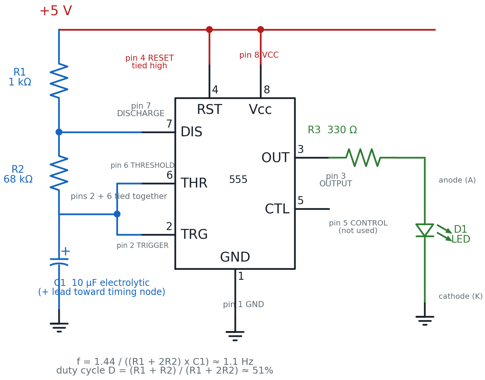
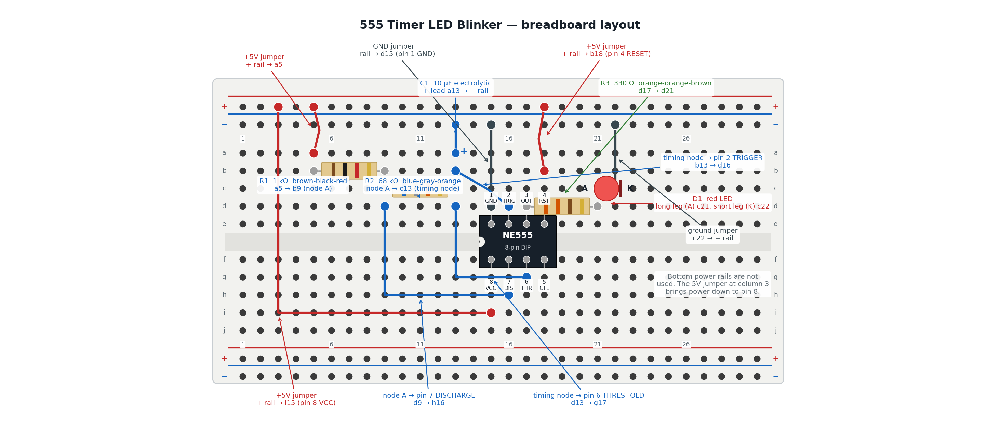

555 Timer LED Blinker
No microcontroller, no code, no button to press — just one chip, two resistors, and a capacitor deciding exactly how fast your LED blinks, forever, for as long as it has power.
Let's make it blink itself!
 Chapter 14 walked you pin by pin through the legendary 555 timer. Now you get to wire the real thing. This is the first circuit in this book that runs completely on its own — set it up, apply power, and it keeps blinking without you touching another wire. Let's light it up!
Chapter 14 walked you pin by pin through the legendary 555 timer. Now you get to wire the real thing. This is the first circuit in this book that runs completely on its own — set it up, apply power, and it keeps blinking without you touching another wire. Let's light it up!
Today's circuit wires the 555 in astable mode — "astable" just means it has no steady resting state, so it flips its output high and low forever on its own, with no trigger signal needed from you.
What You'll Learn
By the end of this lab you will be able to:
- Build a working 555 astable LED blinker on a breadboard from a schematic
- Identify all eight 555 pins by function and orient the chip correctly using its notch
- Calculate the blink frequency and duty cycle of an astable 555 circuit from R1, R2, and C
- Predict how changing the timing capacitor changes the blink rate, then test it
- Diagnose the most common 555 wiring mistakes from what the LED does (or doesn't do)
Before You Start
| Time | 50 minutes |
| Difficulty | Intermediate — your first chip-based circuit |
| You should already know | How to build a basic LED circuit (Lab 10) and how breadboard rows and rails connect (Chapter 6) |
| Helpful background | The 555's eight pins and the astable frequency/duty-cycle formulas (Chapter 14) |
What You'll Need
Everything here is in the $50 kit.
| Qty | Part | Value or marking | How to spot it |
|---|---|---|---|
| 1 | Breadboard | half-size, 30 columns | the white plastic board with rows of holes |
| 1 | 555 timer IC | NE555, 8-pin DIP (dual in-line package) | small black chip; a notch or dot at one end marks pin 1 |
| 1 | Resistor | 1 kΩ | tan body, bands brown-black-red, then gold |
| 1 | Resistor | 68 kΩ | tan body, bands blue-gray-orange, then gold |
| 1 | Resistor | 330 Ω | tan body, bands orange-orange-brown, then gold |
| 1 | Capacitor | 10 µF electrolytic | small cylinder; one lead marked +, a stripe marks the other side |
| 1 | LED | red, 5 mm | one leg longer than the other |
| 8 | Jumper wires | assorted colors | |
| 1 | Power supply | 5 V USB, or a 3×AA battery pack | any phone charger with a USB-A male-to-male cable |
Only have a few jumper colors?
 Color doesn't change how electricity flows — it's just a memory aid. This lab's pictures use red for +5 V, black/gray for ground, and blue for the timing wires. Use whatever you have, but try to stay consistent so your own board is easier to read later.
Color doesn't change how electricity flows — it's just a memory aid. This lab's pictures use red for +5 V, black/gray for ground, and blue for the timing wires. Use whatever you have, but try to stay consistent so your own board is easier to read later.
Safety First
At 5 volts, this circuit cannot hurt you. You can touch every part of it while it runs.
Two habits matter more here than in earlier labs, because this circuit has a chip and a polarized capacitor:
- Wire everything first, plug in power last. Every time, no exceptions. Rewiring a live board risks a short circuit — a path where current skips every resistor and races straight from + to −, which is how wires get hot and parts get damaged.
- Check the 555's notch and the capacitor's + lead before you power up. A chip inserted backward gets its power and ground pins swapped — that's not a dim-LED mistake, it can damage the chip the instant power is applied. A backward electrolytic capacitor is a similar story. Both take five seconds to check and save you a replacement part.
Try It in the Simulator
Before you wire anything, play with this exact circuit in the simulator from Chapter 14.
Set the sim to this lab's values — R1 = 1 kΩ, R2 = 68 kΩ, C = 10 µF — and watch the frequency and duty-cycle readouts. They should land at about 1.1 Hz and 50%. That's the exact blink rate you're about to build. Once it matches, you know what "correct" looks like before you touch a single wire.
The Circuit Diagram
Here is the same circuit drawn the way engineers draw it.

Trace it the way current flows: +5 V feeds pin 8 (VCC) and pin 4 (RESET) directly. R1 carries charging current down to pin 7 (DISCHARGE). R2 continues down to the tied-together pins 2 (TRIGGER) and 6 (THRESHOLD) — call that the timing node. C1 sits between the timing node and ground, charging and discharging over and over. Pin 3 (OUTPUT) is the chip's answer: high or low, on a schedule set entirely by R1, R2, and C1, and it lights D1 through R3.
Two resistors, one job
 R1 only ever charges the capacitor. R2 does both — it charges the capacitor on the way up and discharges it on the way down through pin 7. That's why the duty cycle formula has R2 counted twice on the bottom: R2 is doing double duty, literally.
R1 only ever charges the capacitor. R2 does both — it charges the capacitor on the way up and discharges it on the way down through pin 7. That's why the duty cycle formula has R2 counted twice on the bottom: R2 is doing double duty, literally.
Real 555 circuits often add two small extras: a bypass capacitor from pin 5 to ground, and a supply bypass capacitor across VCC and ground, both for extra electrical stability. They're genuinely optional — this circuit blinks perfectly reliably without them, which is exactly why they're left out of the parts list and the diagram above.
The Breadboard Layout
Now the same circuit on the actual board.

The 555 straddles the board's centre channel on purpose — that's the only way an 8-pin DIP chip fits a breadboard. Pins 1-4 land in row e (columns 15-18); pins 8-5 land directly across the channel in row f (columns 15-18, mirrored). Row e and row f are not connected to each other. That's exactly why pins that belong to the same node — like pin 2 (TRIGGER) and pin 6 (THRESHOLD) — need their own jumper wire, even though the schematic ties them together with a single line.
| In the schematic | On the breadboard |
|---|---|
| +5 V rail | The red + rail, reached by four separate jumpers: to a5 (feeds R1), b18 (pin 4 RESET), and i15 (pin 8 VCC) |
| R1, 1 kΩ | The resistor bridging b5 and b9 — its right end, node A, is the DISCHARGE node |
| R2, 68 kΩ | The resistor bridging b9/c9 (node A) and c13 — its right end, column 13, is the timing node |
| Node A → pin 7 (DISCHARGE) | Jumper from d9 to h16 |
| Timing node → pin 6 (THRESHOLD) | Jumper from d13 to g17 |
| Timing node → pin 2 (TRIGGER) | Jumper from b13 to d16 (column 16 is pin 2's own column) |
| C1, 10 µF, + toward the timing node | + lead in a13, − lead directly in the − rail |
| Pin 1 (GND) | Jumper from the − rail to d15 |
| R3, 330 Ω | The resistor bridging d17 and d21 |
| D1, the LED | Long leg (anode) in c21, short leg (cathode) in c22 |
| Ground return for D1 | Jumper from c22 to the − rail |
Column 9's top-half holes (rows a-e) are one connected group — that's node A, shared by R1's right leg, R2's left leg, and the jumper down to pin 7. Column 13's top-half holes are a second group — the timing node — shared by R2's right leg, C1's + lead, and the two jumpers that carry that node down to pins 6 and 2.
Build It
Work down the list in order. The chip goes in first so every other wire has somewhere to land.
- Leave the power unplugged. Nothing gets connected to the supply until the very last step.
- Insert the NE555 straddling the centre channel, notch (or dot) facing column 15 on the left. Pins 1-4 should land in row e, columns 15-18; pins 8-5 land in row f, columns 15-18.
Checkpoint: read the notch before anything else
Look at the chip from above. The small semicircular notch (or a printed dot) marks pin 1. If it's not facing column 15, pull the chip out and rotate it now — a backward chip swaps its power and ground pins, and that's a five-second fix now versus a ruined chip later.
- Run a black jumper from the − rail to d15 (pin 1, GND).
- Run a red jumper from the + rail to b18 (pin 4, RESET).
- Run a red jumper from the + rail to i15 (pin 8, VCC).
- Run a red jumper from the + rail to a5.
- Bridge the 1 kΩ resistor (R1) from b5 to b9.
- Bridge the 68 kΩ resistor (R2) from b9 (or c9 — same column, same node) to c13.
- Run a blue jumper from d9 to h16 (node A → pin 7, DISCHARGE).
- Run a blue jumper from d13 to g17 (timing node → pin 6, THRESHOLD).
- Run a blue jumper from b13 to d16 (timing node → pin 2, TRIGGER).
The mistake that ruins this lab most often
 Before you place C1: find its + lead. On most 10 µF electrolytic capacitors it's the longer leg, and the stripe on the can marks the negative side. The + lead goes toward the timing node (a13); the − lead goes to the − rail. Get this backwards and the timing network won't charge the way the formula expects — your LED either won't blink at a steady rate, or won't blink at all.
Before you place C1: find its + lead. On most 10 µF electrolytic capacitors it's the longer leg, and the stripe on the can marks the negative side. The + lead goes toward the timing node (a13); the − lead goes to the − rail. Get this backwards and the timing network won't charge the way the formula expects — your LED either won't blink at a steady rate, or won't blink at all.
- Place C1 (10 µF electrolytic): + lead in a13, − lead in the − rail.
- Bridge the 330 Ω resistor (R3) from d17 to d21.
- Push the LED's long leg (anode) into c21 and its short leg (cathode) into c22.
- Run a black jumper from c22 to the − rail.
- Checkpoint — before power. Trace it out loud: +rail → a5 → R1 → node A → R2 → timing node → (two jumpers) → pins 2 and 6. Separately: +rail → b18 (pin 4) and +rail → i15 (pin 8). Pin 3 → R3 → LED → −rail → pin 1. If any of those has a gap, find it now.
- Predict first. Based on the simulator, how many times per second do you expect the LED to blink? Write your guess down.
- Plug in the 5 V supply. The LED should start blinking immediately — about once per second, on for roughly half of each cycle.
You are done when your LED blinks steadily on its own with no wires touched after power-up, and your predicted blink rate is close to what you actually see.
You built a circuit that thinks for itself!
 That LED is going to keep blinking, in that exact rhythm, for as long as it has power — no code, no computer, just a chip doing arithmetic in silicon. You just unlocked the superpower every clock, every blinking status light, and every metronome circuit relies on. Current's flowing your way!
That LED is going to keep blinking, in that exact rhythm, for as long as it has power — no code, no computer, just a chip doing arithmetic in silicon. You just unlocked the superpower every clock, every blinking status light, and every metronome circuit relies on. Current's flowing your way!
How It Works
Chapter 10 introduced the RC time constant: a resistor and capacitor in series, where the capacitor charges up on a curve instead of instantly, and how fast depends on R × C. The 555's astable mode is that exact idea, wired to repeat itself forever.
Here's the cycle. C1 charges through R1 and R2 in series, climbing toward +5 V. The moment it crosses ⅔ of the supply voltage, pin 6 (THRESHOLD) fires and the internal discharge transistor at pin 7 switches on. Now C1 discharges — but only back through R2, because pin 7 shorts the R1/R2 junction toward ground. C1 falls until it crosses ⅓ of the supply, pin 2 (TRIGGER) fires, discharge switches off, and the whole cycle starts again. Pin 3 (OUTPUT) is high while C1 is charging and low while it's discharging — that's your blink.
Notice R2 is in the path both directions — charging and discharging — while R1 only ever charges. That's why R2 appears twice in the frequency formula and once extra in the duty-cycle formula.
Astable Frequency
With this lab's values:
That rounds to about 1.1 Hz — a little faster than once a second, which matches Chapter 14's own table for these exact parts.
Astable Duty Cycle
About 50% — the LED spends almost exactly half of each cycle on and half off, because R1 (1 kΩ) is tiny compared to R2 (68 kΩ). When R1 is small next to R2, the charge and discharge times end up nearly equal.
Where you've seen this before
 A turn signal's steady click-click-click. A microwave's blinking clock colon. An old hard drive's activity light. All of them are some circuit's version of exactly this: a timing network deciding how long "on" lasts and how long "off" lasts.
A turn signal's steady click-click-click. A microwave's blinking clock colon. An old hard drive's activity light. All of them are some circuit's version of exactly this: a timing network deciding how long "on" lasts and how long "off" lasts.
When It Doesn't Work
Work down this list in order — check power and orientation before you check anything clever.
| What you see | Likely cause | Fix |
|---|---|---|
| Nothing at all, chip runs warm | 555 inserted backward — notch not facing column 15 | Unplug power immediately, pull the chip, and reinsert it with the notch toward column 15 |
| Nothing at all | Pin 4 (RESET) not tied to +5 V | The 555 never oscillates with RESET floating or low — check the jumper from the +rail to b18 |
| LED never blinks, stays dim or steady | Pins 2 and 6 aren't actually joined | TRIGGER (pin 2) and THRESHOLD (pin 6) must both reach the same timing node — recheck both blue jumpers (d13→g17 and b13→d16) |
| Blink rate is wildly wrong or erratic | C1 (electrolytic) inserted backward | Pull C1 and check the + lead lands in a13, toward the timing node, with the − (striped) side toward the rail |
| Chip is oriented correctly but nothing lights | LED inserted backward | Long leg (anode) toward R3/c21, short leg (cathode) toward c22 and the − rail |
| Everything blinks but very dimly | R3 swapped for a much larger value | 330 Ω is correct for this LED at 5 V; a 10 kΩ resistor here would barely glow |
| No power reaching anything | A rail jumper isn't fully seated | Recheck all four jumpers into the + rail and the two into the − rail |
An IC circuit has more places to check — that's normal
 Eight pins means eight chances to double-check something, and that can feel like a lot after the single-part fixes in earlier labs. The method doesn't change: power first, then chip orientation, then polarity, then one wire at a time. You have all the skills already — this circuit just has more of them to use at once.
Eight pins means eight chances to double-check something, and that can feel like a lot after the single-part fixes in earlier labs. The method doesn't change: power first, then chip orientation, then polarity, then one wire at a time. You have all the skills already — this circuit just has more of them to use at once.
Check Your Understanding
Answer each one before you open it.
1. Which 555 pin is the OUTPUT, and what does it drive in this lab?
Pin 3. It drives R3 (330 Ω), which limits current into D1, the LED. Pin 3 switches high and low on the schedule set by R1, R2, and C1 — that switching is the blink.
2. What is pin 4 (RESET) connected to in this circuit, and what would happen if you left it disconnected?
Pin 4 is tied to +5 V — "held high" — so it never interferes with the oscillation. RESET forces the output low the instant it's pulled low, so if it were left floating or connected to ground, the 555 would never oscillate at all. The LED would simply stay dark no matter how the timing network is wired.
3. Calculate the frequency for R1 = 1 kΩ, R2 = 68 kΩ, C = 10 µF. Show your work.
About 1.1 Hz once rounded — a little faster than one blink per second.
4. Calculate the duty cycle for the same R1 and R2. Does the capacitor value affect it?
No — C cancels out of the duty-cycle formula entirely. Changing the capacitor changes how fast the LED blinks, but not what fraction of each cycle it spends on.
5. Your LED lights up steadily — fully on, no blinking at all — instead of flashing. Which wiring mistake from the troubleshooting table best explains this, and why?
Most likely pins 2 and 6 aren't actually joined to the same timing node. Without both TRIGGER and THRESHOLD watching the same capacitor voltage, the chip can get stuck instead of cycling. (A 555 with a genuinely broken timing network can also latch high depending on exactly what's disconnected — the fix either way is the same: recheck both jumpers into the timing node.)
6. You swap C1 for a 1 µF capacitor, ten times smaller. Predict the new frequency using the formula, then say in words what you'd see.
Ten times smaller capacitance gives ten times the frequency — about 10.5 Hz instead of 1.05 Hz. In words: the LED would blink about ten times a second, fast enough to look almost like a flicker instead of a clean on/off blink. The duty cycle would stay at about 50%, since C doesn't appear in that formula at all.
Take It Further
Challenge: make it blink ten times faster. Swap C1 for a 1 µF capacitor. Before you power it back up, calculate the new frequency with the formula above.
You have succeeded when your calculated frequency is close to 10.5 Hz, the LED visibly blinks much faster than before, and you can explain why the duty cycle didn't change.
If that was easy, try this: swap R2 for a 6.8 kΩ resistor instead (keep C1 at 10 µF). Calculate the new frequency and duty cycle. Notice the duty cycle moves further from 50% as R1 and R2 get closer in size.
You'll use that same relationship again in Lab 46: 555 Timer Buzzer and Siren. There, this exact circuit — with much smaller timing values — turns into an audible tone instead of a visible blink.
Learn More
- Chapter 14: The 555 Timer Chip — the pin-by-pin tour and the astable formulas this lab builds from
- Chapter 6: Meet Your Breadboard — the hidden rows and rails that make the centre-channel wiring work
- Lab 10: Your First LED Circuit — the current-limiting resistor math this lab reuses for R3
- Lab 46: 555 Timer Buzzer and Siren — this same astable circuit, retuned to drive a buzzer instead of an LED
- SparkFun: 555 Timer Basics — a deeper outside tutorial covering astable, monostable, and bistable modes with more example circuits